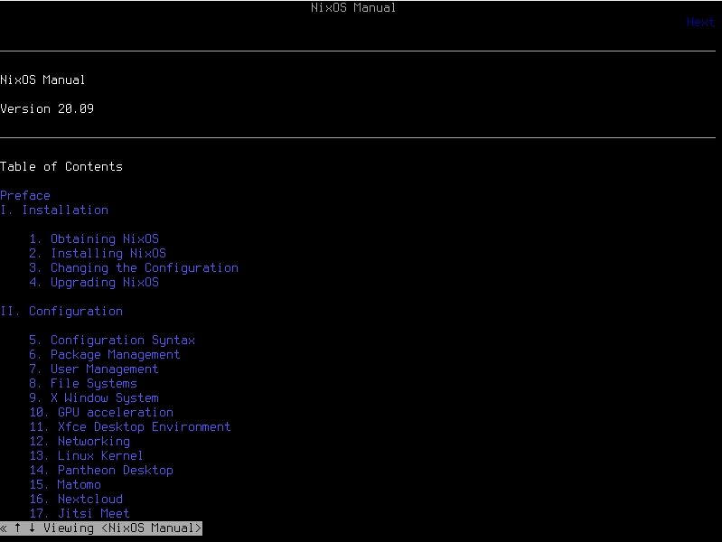

NixOs Checkout
NixOs Checkout
Created:
Abstract
After trying out the Nix package manager (full details here). It's
time to try out NixOs, still with the idea to setup a reproducible
environment once and for all. We will start out from the result of
the Nix experiment and evolve that to use NixOs, with a little
cheat. 😉
Content
Intro
We learned from the previous experience that, setting up a full
system out of only Nix package manager, is a tough
task. However, NixOs exists for that exact purpose: leverage the
Nix package manager to the max and allow you to have a
reproducible system. Plus, you can find a lot of documentation
and examples out there where you can get inspired from.
In particular, I came across Gabriel Volpe's NixOs configuration
and I was quite impressed by what he had done. It seems very easy
to setup, very complete and it uses XMonad, a tiling window
manager written in Haskell. Plus, he has an article on that!! So,
it should be easy to extend and that's exactly what I want. Let's
write down the steps to take
- Setup a
NixOsVirtual Machine - Take my previous
Nixconfiguration - Fork Gabriel's Configuration
- Merge them together
- Try the result on a
NixOsvirtual machine
In addition, NixOs comes also as minimal ISO, so you can
configure it from the ground up instead of having to remove the
software you might not want.
Ah, I forgot to say that Gabriel is still developing his configuration! Then, if he will add something I might end up stealing it just by doing a quick merge from his repository. 😎
First Step - NixOs Virtual Machine
let's install minimal NixOs on a VirtualBox. You can find the
ISO here. I just noticed how you can directly download a
VirtualBox Virtual Machine straight out from the site! Unfortunately it is
the Plasma version, meanwhile we want to start from the minimal one.
At this stage, I'm just going to install the plain system and then work on the configuration on the host machine. When, I will feel confident and satisfied enough about the configuration, I will clone it into the Virtual Machine and test it out.
I do so because it's extremely easier to work into the host machine instead of doing the changes inside the virtual machine. Basically, I'll use that as a compiler until everything is fine.
It boots into a shell as expected, but what I liked is the
suggestion to type nixos-help and get back the whole detailed
manual about the system. A comprehensive guide with all the links
to different sections

You have to be patient and read the manual about the different options you have for installation, but at the end it's not that difficult to do, you need to:
- Partition your drive
- Format the drive
- Generate and write your configuration file
- install the system
# for Legacy boot, see manual for uefi sudo parted /dev/sda -- mklabel msdos # Create primary partition, but 8gb for the swap sudo parted /dev/sda -- mkpart primary 1MiB -8GiB # Create the Swap partition sudo parted /dev/sda -- mkpart primary linux-swap -8GiB 100% # Format primary partition sudo mkfs.ext4 -L nixos /dev/sda1 # Format Swap sudo mkswap -L swap /dev/sda2 # Mount the primary partition into mnt sudo mount /dev/disk/by-label/nixos /mnt # Enable the swap sudo swapon /dev/sda2 # Generate the configuration sudo nixos-generate-config --root /mnt # Edit configurations sudo nano /mnt/etc/nixos/configuration.nix # Install the system sudo nixos-install
I can see how it could be tedious, but if you want there's already
someone else online who has crafted scripts to make this pretty
much automatic, eg this installation script.
If you want to see a video regarding installing NixOs, you can
find it in here.
Edit: after nixos-install, the laptop crashed 😄
OK, seems that, after login you need to log as a root and then set the password for the new user. Not so great.
End of the day: I took the configuration straight out from the
box, apart of my username, but I couldn't make it work. I got some
DBus error that's seems related to gnome somehow, Not very promising.
Since we will follow the idea of: installing more then necessary and then remove/add/replace software with your own, at this point we can just download the virtual box pre-cooked Virtual Machine from the site and try with that. Apparently, I'm not able to start from minimal ISO 😢
The good thing about using the ready-to-go is that you can just:
- Import it into
VirtualBox - Mount the main partition as above
- Generate the configuration
- Install
NixOs
So you can skip all the commands about the file system.
Working on configuration
Well, I worked on the configuration, but I did a great mistake: I started to change it without regarding if it worked or not. Guess what, the result is that it didn't work and I didn't know why. I assume all the guilty, I should just start from something that works and, VERY SLOWLY, start changing it as I wish.
So what I do now is, let's just apply the configuration I forked from and then let's see what we can do to make it mine 😃
Well, seems that, even just not touching anything from Gabriel's configuration I got:
error: GDBus.Error:org.freedesktop.DBus.Error.ServiceUnknown: The name ca.desrt.dconf was not provided by any .service files
I tried applying the solution described in here and in other
places, but it didn't work. Then I tried with nix-env -i dconf
installing the package manually and it seemed to work. Plus, I had
to add a couple of lines into the install script since there were
some configuration conflicts to solve.
Well, after the restart, XMonad started but I got this new error:
org.freedesktop.DBus.Error.ServiceUnknown: The name org.blueman.Mechanism was not provided by any .service files
And then the screen stays grey. Apparently we need to install
more stuff on to our configuration, I'm going to revert the NixOs and
try to do the add from here. Good news, the oldest configuration
seems to have the XMonad, so I'm not able to login to the system
as before. I'll try to see if I can access a terminal from the
grub and commit my changes.
Did I just debunked the Reproducibility and Reversibility of
NixOs?? (or I just can't make it work)
Change of Plan
Let's take a different approach, I will:
- Take the default
/etc/nixos/configuration.confand thehome.nixfile I created from my previous experiment - See if everything works
- Keep tweaking the configuration until a satisfactory result
After a little effort in editing this and that, this seems to be the right way to go. The only problem is that, I did quite some changes, I run a switch command and now the virtual machine is frozen. Time for a break.
There are a bad and a good news, the good one is that I restarted
into an XFCE environment, the bad is that it doesn't seems to
have any software available from the ones I specified into my
home.nix and now I encountered this error:
error: attribute 'anything' missing, at /mix/var/nix/profiles/pre-user/root/channels/home-manager/modules/programs/matplotlib.nix
The fun fact is that I can't change it since the file system is read only!! 😠 At least I was able to push all the changes to the repository, so I can retry a fresh install, since that's what we are looking for, it needs to work right from the start (if it ever does)
Don't Give Up
I'm not that kind of person who stops at first issue, so let's keep trying and trying again.
- I restarted from a new
NixOsmachine - I applied the changes following the guideline and I kept track of each command I did.
- I first applied the
configuration.nix, installedNixOs, appliedhome.nixand finally I ran thehome-manager. It seems there's a different way of installhome-managerinNixOssince you have to be careful about the specific version you are going to use
And now, finally, I'm able to have a simple setup that works in
the Virtual Machine!!!! I can now proceed into tweaking the configuration
details until I'm fully happy with it. At each step I will just
use the Nix configuration to apply all the changes.
commit ← this is the commit that seems to work now ☺
Up to Speed
Now that I'm able to comfortably configure the system, I must say it's pretty fast doing so:
- Adding a new software is usually just
adding it to the packages lines
- Dot files are easy to configure and check
- Stuff like environment variables or daemons are built-in the
configuration of
NixOsorhome-manager.
Once you start understanding how things works you move quickly then a bash script. Anyway, you can always fallback to a script for some tasks.
For simplicity I used xfce as window manager, but now that
everything seems fine, I really wish to move to a tiling window manager.
I just tried with i3 and I messed up with the configuration as
expected. Well, I think it's time to put the NixOs time machine
mechanism to the test…and I was able to go back to a previous
working configuration of my system, change the configuration and try a
different setup, Benkio is happy now!!! 😃
At the end of the day I did some progress, but half of my Virtual Machine snapshots are broken due to bad configuration.
edit: when I say «up to speed» I mean, «most of the time». For
example, it took me half a day to setup Firefox extensions using
home-manager and nur due to the fact that I needed to apply a
package Override and it was not so easy to figure it out.
Follow Up
I think I reached quite a fine initial configuration by now: I just have all the software I need (Emacs and Firefox basically 😃) and I have a basic tiling window manager (i3) with simple configuration to manage windows and so on.
What I will do now is:
- Playing more into the Virtual Machine: trying to develop in it for a bit and do my classic tasks.
- Work more on the startup installation: setup everything from the
minimal
NixOsas smoothly as possible. Probably creating one or more basic shell scripts.
After a while, when I feel confident I might format my main
machine entirely and switch to NixOs. I might add a new section
later on in case of relevant updates.
Conclusions
Finally, I have a working configuration!! 🎉
As you read it wasn't simple at all, I hope this would turn out to
be beneficial in the long run, I can't say right now. What I know is
that it took me several hours in order to have something that works
and, even if the documentation is actually huge, I think a better
job could be done regarding the Getting Started guides and basic
NixOs templates instead of having to go to github inspecting the
different user configurations and steal from one or another.
I hope this article could was useful to you and if you are
interested in looking at Nix~/~NixOs then feel free to checkout my
configuration. You will find the link in the References Section.